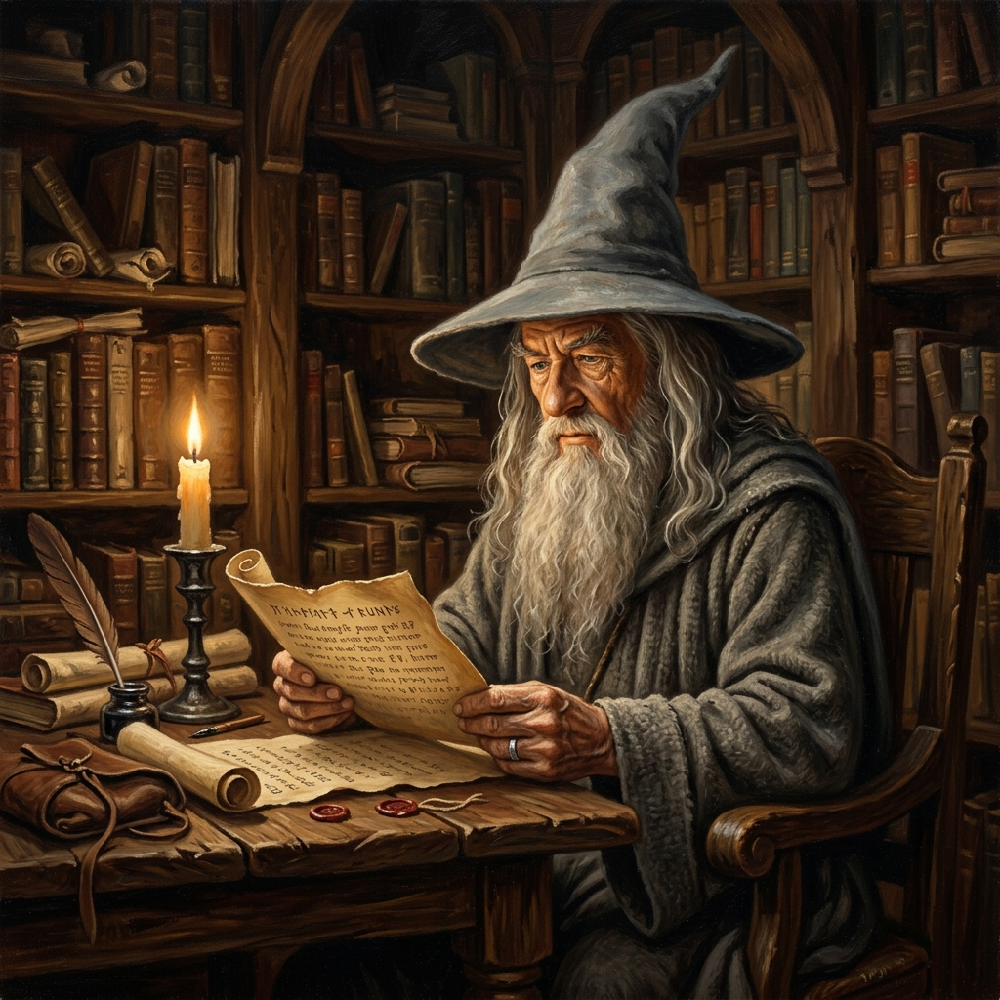

KOMUNIKAT Z SHIRE
Wczytywanie zwojów...

⟢ MAPA CIEŚNI SHIRE I OKOLIC ⟣
Przewodnik po Śródziemiu
Prawo Autorskie
Witaj w Bag End, szanowny wędrowcze! Wysłuchaj opowieści Froda, Sama, Legolasa, Gimli i Smauga, którzy wyjaśnią Ci zasady własności intelektualnej w Śródziemiu, a na koniec zmierz się z egzaminem u Gandalfa Szarego.
Egzamin w Rivendell (Odliczanie)
--dni
--godz.
--min.
--sek.
📖 Spis Rozdziałów 16 zwojów
🔮 Filtry Pojęć
Wybierz odpowiedni krąg run, aby ujrzeć pojęcia z danej kategorii.
Runiczne Kamienie Wiedzy
🎴 Fiszki Elfyjskie
Karty szybkiego kojarzenia. Oznaczaj pojęcia, które już opanowałeś, by powtarzać tylko trudniejsze fragmenty zwojów.
POSTĘP NAUKI:
Opanowane:
0 / 0
W talii:
0
Karta 0 · Kategoria:
Tag
Pytanie?
[Kliknij, by obrócić]
Odpowiedź
Wyjaśnienie.
[Kliknij, by obrócić]
🎓 Egzamin u Gandalfa
Czarodziej podda Cię próbie 30 pytań jednokrotnego wyboru, wylosowanych z puli 45 pytań. Po każdym pytaniu zobaczysz merytoryczne objaśnienie.

📜 Wyroki Gandalfa
Wybierz jeden ze sprawdzonych zwojów orzecznictwa w Śródziemiu, aby zapoznać się ze stanem faktycznym i wyrokiem.
30%
0%